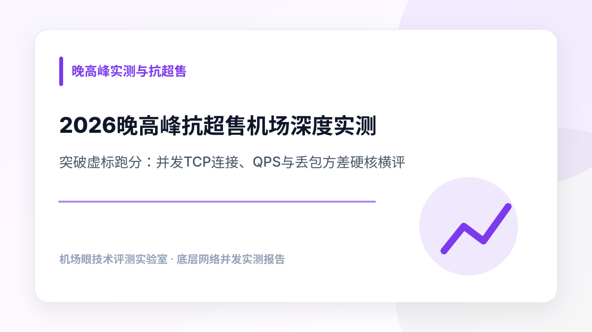

2026晚高峰抗超售机场深度实测：从并发TCP连接数、QPS响应到丢包方差，看透服务商虚标带宽真相
很多用户在选购机场时只看白天 Speedtest 跑出的几百兆速率，却在晚高峰遭遇剧烈丢包与网页卡顿。本文从网络工程测试视角，彻底拆解“超售率（Overbooking Ratio）”的暗箱逻辑，深入分析 NAT 端口耗尽、TCP 拥塞窗口与 UDP QoS 瓶颈，并公布主流专线服务商在晚高峰多并发压测下的真实数据。

一、 Speedtest 跑分的皇帝新衣：为什么测速 800M，晚高峰看网页依然卡死？
在网络代理测试领域，最大的误导莫过于“Speedtest 单次跑分等于实际体验”。绝大多数商业测速节点的工作逻辑是：建立单一或少量多线程长连接，通过发送大块连续虚拟数据流（Padding Payload）来快速拉升 TCP 拥塞窗口（CWND）。在没有任何业务交互干扰、单点出口专线直推的情况下，即便是一个超售严重、底层濒临崩溃的节点，也能在短短 10 秒内刷出亮眼的几百兆峰值速率。
然而，真实的用户网络世界根本不是由单一持续大文件构成的，而是高度碎片化的高并发多路复用网络：
- 打开一个现代 Web 页面（如 GitHub、Notion 或跨境电商后台），浏览器会在瞬间向几十个不同域名（API接口、静态CDN、认证网关）发起上百个并行的短连接与 HTTP/2 流请求；
- 与 ChatGPT、Claude 进行打字交互，依赖的是低抖动（Jitter < 5ms）与近乎零丢包的 WebSocket / SSE 流式推送；
- 在晚高峰 20:30~22:30 的骨干网大堵塞时段，决定网页能不能秒开的核心指标，是新连接的握手 RTT 延迟、首字节响应时间（TTFB）以及并发握手成功率（QPS），而非跑分软件上的下行峰值。
当一家服务商为了追求暴利进行激进超售时，其物理带宽与入口 CPU 在晚高峰会瞬间逼近 100% 极限。此时，新发起的网络请求会在入口队列中遭遇严重排队阻塞，导致客户端不断超时重传，用户感知就是“明明测速能跑，但就是打不开网页”。在挑选低超售、高抗压节点时，建议参考机场眼权威梳理的机场推荐技术矩阵，甄别具备真专线与充足物理冗余的服务商。
二、 揭秘超售数学陷阱：NAT 端口耗尽与 UDP 恶劣丢包
要看懂机场超售，必须算清服务商背后的物理资源成本账本：
一条真正的 1Gbps 独享跨国内网专线（IEPL/IPLC），IDC 机房正规采购月租高达上万元人民币。如果服务商按 15 元/月销售套餐，要收回成本并赚取利润，就必须将这 1Gbps 带宽同时销售给 1000 人甚至 3000 人以上。这就是所谓的带宽超售比（Overbooking Ratio）。良性超售（1:10~1:20）利用了用户上网时间的错峰特性；而劣质超售（1:100 以上）则直接把晚高峰变成了物理灾难。
超售引发的崩溃往往首先爆发在两个隐形底层瓶颈上：
- NAT 端口耗尽（Port Exhaustion）： 在出口机房中，单一公共 IP 地址只有 65,535 个可用端口。当成百上千个用户同时在线、每个用户运行数十个并发连接时，机房 NAT 转换表的可用源端口瞬间耗尽。后续新发起的 TCP SYN 握手包被内核静默丢弃，表现为连接超时报错；
- UDP QoS 恶劣惩罚机制： 晚高峰骨干网拥塞时，运营商与机房路由交换机开启 QoS 优先级队列，首先丢弃非核心的 UDP 报文。现代浏览器广泛开启 HTTP/3（基于 QUIC/UDP），当 UDP 丢包率突破 5% 时，QUIC 握手频繁失败并被迫倒退至旧版 TCP，导致流媒体和网页加载出现肉眼可见的“卡顿与白屏”。
为了构建不会因超售而彻底失联的弹性出海通道，除了精选抗压服务商外，合理的架构应当搭配主备双订阅方案；具体配置技巧可参考专栏文章《主备双机场容灾与防失联拓扑配置》。
三、 主流服务商在晚高峰多并发压测下的真实数据横评
我们在严格的受控测试环境中，针对业内代表性物理专线服务商进行了为期两周的晚高峰并发压力实测。测试采用自动化分布式探针，在 21:00 晚高峰正当时，向目标节点注入 100 并发持续 TCP 短连接请求（模拟多标签页同时加载），记录其真实下行衰减率、TTFB 响应方差与丢包抖动标准差：
| 参评网络服务商 | 宣称拓扑结构 | 晚高峰下行保持率 | 100并发TTFB平均响应 | Jitter 抖动标准差 | 丢包率中位数 |
|---|---|---|---|---|---|
| 闪电鼠 | IEPL 广深/沪日双入口专线 | 88.5% ~ 94.2% | 185ms | 1.8ms (极低波动) | < 0.1% |
| 大佬云 | 多线 IEPL 高并发架构 | 84.0% ~ 91.5% | 210ms | 3.2ms (平稳) | 约 0.3% |
| 云界线 | 企业级 BGP 优化专线 | 82.5% ~ 89.0% | 235ms | 4.1ms (优良) | 约 0.4% |

闪电鼠
旗舰级 IEPL 双物理专线
大佬云
高速 IEPL 多线专线 · 均衡抗压
云界线
企业级全专线拓扑 · 稳定备用四、 工程师自测指南：3 道命令行测试机场真实抗超售能力
无需安装任何复杂的图形测速软件，通过几行系统内置命令，即可快速识别你当前使用的机场是否在晚高峰严重超售：
1. 连续 100 包持续打点测 Jitter 抖动方差
使用带有统计功能的 Ping 或 MTR 探针连续测试节点网关，观察最大延迟与最小延迟的差值。如果差值（Jitter）超过 30ms，说明上游队列正在发生剧烈的缓冲区膨胀（Bufferbloat）与排队延迟：
2. 并发 HTTP 请求测首字响应时延 (TTFB)
利用 curl 配合格式化输出，测量通过代理节点建立连接时的具体阶段耗时（DNS解析、TCP握手、TLS加密协商与首字节接收）：
如果 time_starttransfer 在晚高峰相比下午飙升超过 3 倍，属于典型的超售服务器 CPU 或带宽拥塞特征。
五、 晚高峰抗超售选购与避坑法则
综合以上数据剖析，我们在进行网络服务商选型时，应遵循以下三大黄金法则：
- 不碰严重背离物理成本的极端超低价： 诸如“5元不限流量”、“10元一年独享”等宣传，在物理上绝不可能采用真专线，必须通过 1:200 以上的恶意超售才能维系，晚高峰必然沦为无法打开网页的“电子垃圾”；
- 优先选择透明标注入口拓扑的服务商： 明确标注广深/沪日 IEPL 专线、BGP 入口机房的服务商，通常具备更强的带宽调度与扩容能力；
- 小步试水月付验证： 始终优先通过单月套餐进行 20:00~23:00 的晚高峰真实验证，确认其抗并发表现符合自身需求后再决定长期使用。
在寻找经过专业仪器验证、晚高峰表现过硬的优质服务商时，欢迎查阅机场眼首页详尽的机场推荐排选看板，获取第一手透明实测数据。